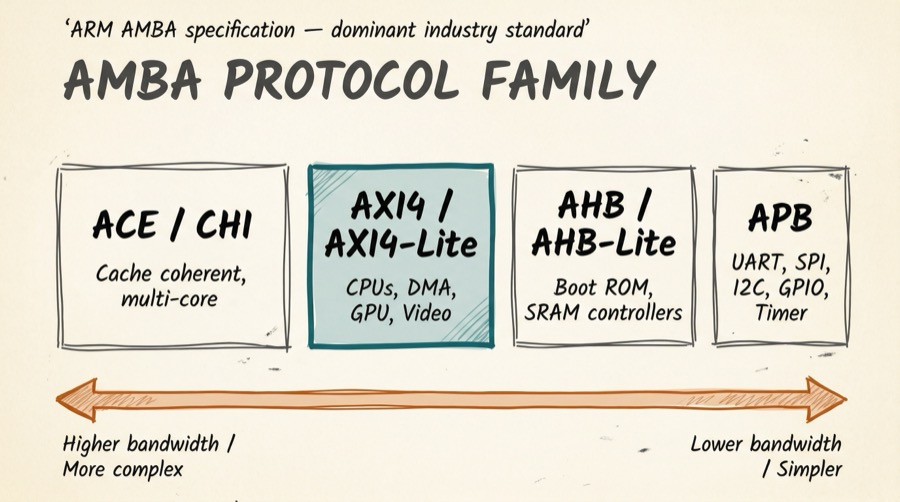
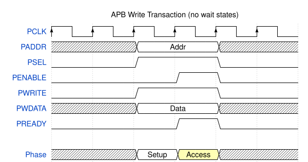
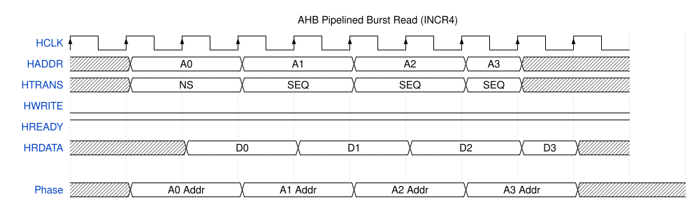
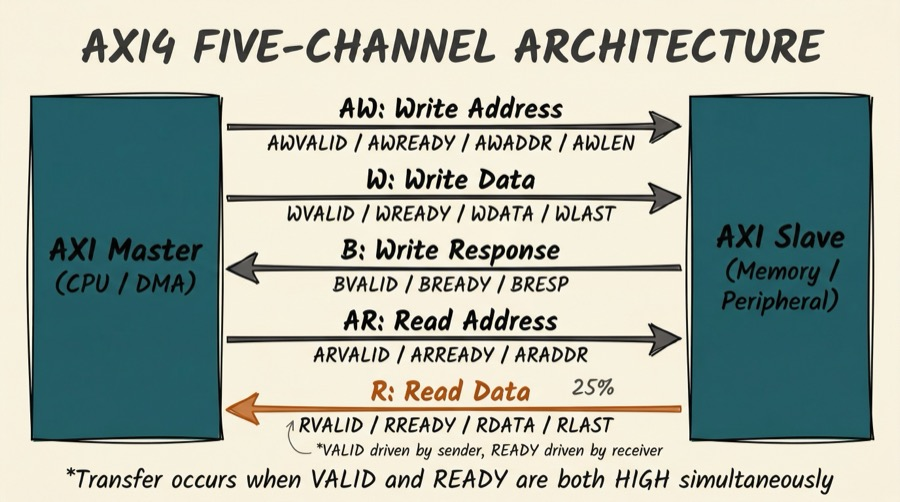
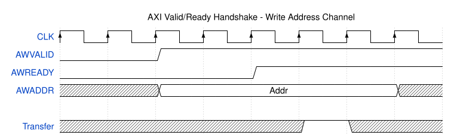
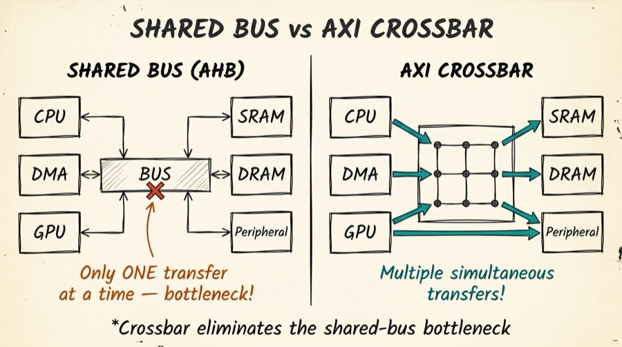
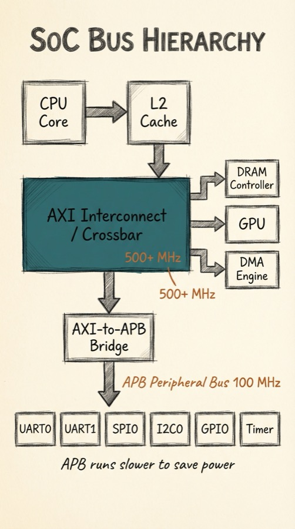
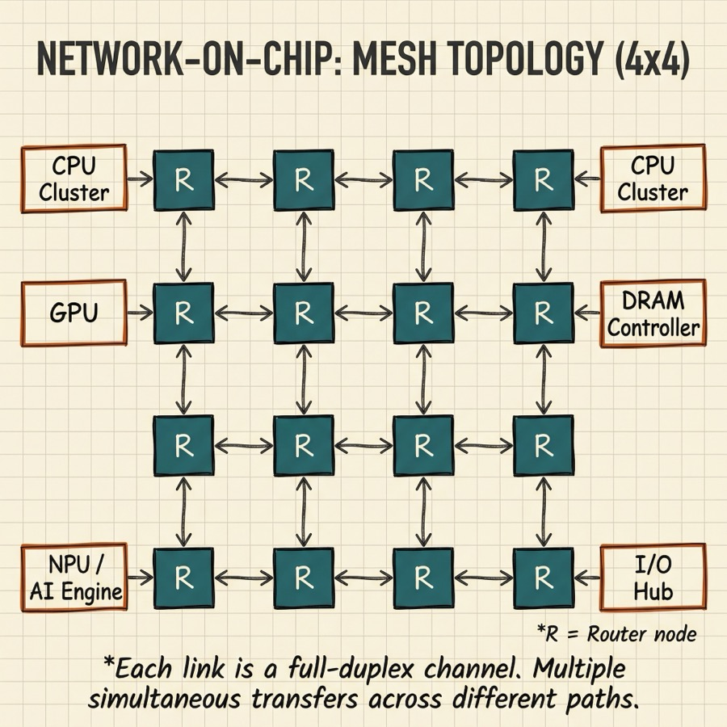

Series: Introduction to SoC Design | Article 6 of 11
Introduction
Every block on a SoC -- CPUs, DMA engines, memory controllers, peripherals -- must communicate with every other block. The internal communication fabric that makes this possible is called the interconnect or bus. Choosing and designing the interconnect is one of the most consequential architectural decisions in SoC design: it determines bandwidth, latency, arbitration, and overall system throughput.
This article introduces the major bus standards used in modern SoCs, with emphasis on ARM's AMBA (Advanced Microcontroller Bus Architecture) family, which is the dominant standard in the industry.
Why a Standard Bus Matters
Without a standard interface, every IP block would need a custom interface to every other block -- an impractical explosion of design effort. A standard bus protocol defines:
- Signal names and widths -- both sides know how to connect
- Handshake mechanism -- how a master requests and a slave responds
- Transaction semantics -- what "read", "write", and "burst" mean
- Timing requirements -- setup times, hold times, latency bounds
IP vendors design their blocks to be plug-compatible with the standard, so a UART controller from one vendor and a DMA engine from another can both connect to the same ARM CoreLink interconnect without any custom glue logic.
The AMBA Family
ARM's AMBA specification, first published in 1996 and evolving through multiple generations, defines a family of bus protocols at different performance tiers:

The family spans from simple, low-power APB peripherals on the right through pipelined AHB, high-performance AXI4, all the way to cache-coherent ACE/CHI protocols used in multi-core processor clusters on the left.
APB -- Advanced Peripheral Bus
APB is the simplest AMBA protocol, designed for low-bandwidth, low-power peripheral registers. It is a synchronous, non-pipelined bus with no burst mode -- every transfer takes a minimum of two clock cycles.
APB Signals
Key APB signals:
PCLK -- ClockPRESETn -- Active-low resetPADDR -- Address (12-32 bit)PSEL -- Select: asserted to indicate target peripheralPENABLE -- Enable: on second cycle of every transferPWRITE -- Direction: high = write, low = readPWDATA -- Write dataPRDATA -- Read data (from slave)PREADY -- Slave extends transfer if not readyPSLVERR -- Slave error response
APB Write Timing
An APB write transaction takes place over two phases: Setup and Access:

In the Setup phase, PSEL is asserted and the address and write data are presented. In the Access phase, PENABLE goes high confirming the transfer. PREADY allows a slow peripheral to extend the access phase by holding it low.
APB is ideal for: UART, SPI, I2C, GPIO, timer, and watchdog registers -- anything that does not require high data throughput.
AHB -- Advanced High-performance Bus
AHB sits in the middle tier. It is a pipelined, higher-bandwidth protocol supporting burst transfers. AHB separates the address phase and data phase, allowing the next address to be issued while the current data transfer is in progress.
Key AHB Signals
HCLK, HRESETn -- Clock and resetHADDR -- Address (32-bit)HTRANS -- Transfer type: IDLE / BUSY / NONSEQ / SEQHWRITE -- DirectionHSIZE -- Transfer size (8, 16, 32, 64... bit)HBURST -- Burst type (SINGLE, INCR, WRAP4, INCR4...)HWDATA / HRDATA -- Write and read dataHREADY -- Transfer complete / extendHRESP -- Response (OKAY / ERROR)
AHB Pipelined Burst Read

The key insight: while the data for A0 is being returned, the address A1 is already being presented. This pipeline overlap hides address-to-data latency and improves throughput.
AHB Arbitration
When multiple masters (CPU, DMA) contend for the AHB, an arbiter decides who gets access using a bus grant / bus request protocol. Masters assert HBUSREQx when they want the bus; the arbiter asserts HGRANTx to indicate the winner. This round-robin or priority-based arbitration introduces a form of time-division multiplexing onto the shared bus.
AXI -- Advanced eXtensible Interface
AXI4 is the highest-performance AMBA protocol, used to connect CPUs, memory controllers, DMA engines, GPUs, and other high-bandwidth masters and slaves. It is the backbone of most modern SoCs.
AXI4's key innovation is independent channels: read and write transactions are completely separate, and multiple transactions can be in flight simultaneously.
The Five AXI Channels

The five channels are:
- AW (Write Address) -- master sends the address and burst parameters for a write
- W (Write Data) -- master sends the data beats with byte strobes and WLAST flag
- B (Write Response) -- slave confirms the write completed (or reports an error)
- AR (Read Address) -- master sends the address and burst parameters for a read
- R (Read Data) -- slave returns data beats with RLAST flag
Valid/Ready Handshake
Every AXI channel uses the same valid/ready handshake protocol. The sender asserts VALID when it has data to transfer. The receiver asserts READY when it can accept data. The transfer completes on the rising clock edge when both are high:

This decoupled handshake is powerful: the master can issue addresses continuously; the slave can stall when its internal buffers are full, without requiring the master to back off.
AXI Burst Transfers
Rather than issuing many single transactions, AXI supports burst transfers -- a single address phase followed by multiple data beats. This dramatically improves efficiency for sequential memory access.
Key burst parameters:
- AWLEN / ARLEN -- number of data beats (0=1 beat, 255=256 beats for AXI4)
- AWSIZE / ARSIZE -- bytes per beat (1, 2, 4, 8, 16, 32, 64, 128)
- AWBURST / ARBURST -- burst type:
FIXED -- same address repeated (useful for FIFOs)INCR -- address increments each beat (normal memory access)WRAP -- like INCR but wraps at a boundary (useful for cache lines)
AXI IDs and Out-of-Order Transactions
AXI assigns each transaction an ID (AWID / ARID). A slave may respond to transactions out of order as long as responses within the same ID are in order. This allows a memory controller to optimise DRAM access patterns rather than being forced to respond in the exact order of requests.
The Interconnect: From Bus to Crossbar
A simple shared bus forces all masters to share a single data path -- only one master can use it at a time. This creates a bottleneck in systems with multiple high-bandwidth masters.
The solution is an AXI crossbar (also called a switch matrix): it provides dedicated paths between every master-slave pair, allowing multiple simultaneous transfers as long as they target different slaves.

ARM's CoreLink NIC-400 and NIC-450 are examples of AXI mux-style interconnects, where a fixed matrix routes each master to a set of slaves. The CoreLink NI-700 takes a different approach: it is a Network-on-Chip (NoC) switched network that routes transactions independently through the fabric, allowing better scalability for large numbers of endpoints. RISC-V SoCs commonly use TileLink or AXI crossbars built with open-source IP.
QoS: Quality of Service in Interconnects
Not all traffic is equal. A display engine reading pixel data must deliver frames at a guaranteed rate, or the screen will tear. A background DMA transfer moving log data is not time-critical. AXI4 supports QoS signalling (ARQOS / AWQOS) -- a 4-bit priority tag attached to every transaction.
The interconnect uses these tags to arbitrate between competing masters, ensuring that time-sensitive traffic is served first without starvation of low-priority traffic.
AXI4-Lite: The Simplified Register Interface
Full AXI4 has substantial complexity -- burst management, ID tracking, out-of-order responses. For accessing peripheral register banks (where individual 32-bit reads and writes are all that is needed), AXI4-Lite offers a simplified subset:
- No burst support (single transfers only)
- No transaction IDs
- No out-of-order support
- Simple 32-bit or 64-bit data width
AXI4-Lite is extremely common for connecting peripheral IP blocks to the system bus, where its simplicity makes it easy to implement correctly.
APB Bridge: Connecting the Bus Tiers
Because APB is simpler and lower power, slow peripherals are typically attached to an APB bus rather than directly to the AXI/AHB backbone. An AXI-to-APB bridge converts between the protocols:

The bridge runs the APB at a lower, slower clock (e.g., 100 MHz) while the AXI backbone runs at 500 MHz or more, reducing dynamic power in the peripherals.
Network-on-Chip (NoC)
In the largest, most complex SoCs -- server processors, AI accelerators -- even an AXI crossbar becomes a bottleneck. The solution is a Network-on-Chip (NoC): a switched packet network embedded on the die, with routers at each node and links between them.

NoCs provide:
- Scalability -- adding more processing tiles does not require redesigning the interconnect
- Bandwidth -- multiple simultaneous transfers across different links
- Modularity -- standard router IP can be assembled in different topologies
This is an advanced topic covered in the advanced article series.
Summary
SoC interconnects form the communication backbone that links every functional block. The AMBA protocol family provides a hierarchy of protocols: APB for simple peripherals, AHB for mid-range transfers, and AXI for high-performance connections. AXI's independent channel architecture and valid/ready handshake enable high-throughput, pipelined, out-of-order transfers. Crossbar interconnects replace shared buses to allow simultaneous transfers between different master-slave pairs. Understanding these protocols is essential for designing IP blocks that plug into an SoC and for debugging system-level performance issues.
Further Reading
- AXI4 Protocol Deep Dive -- Burst types, transaction IDs, out-of-order response ordering
- DMA Controller Architecture -- How a DMA engine uses AXI to move data autonomously
- Network-on-Chip Design (Advanced) -- Topology, routing algorithms, virtual channels
Previous: Article 05 -- Memory Architecture
Next: Article 07 -- Clocking, Reset, and Power Domains